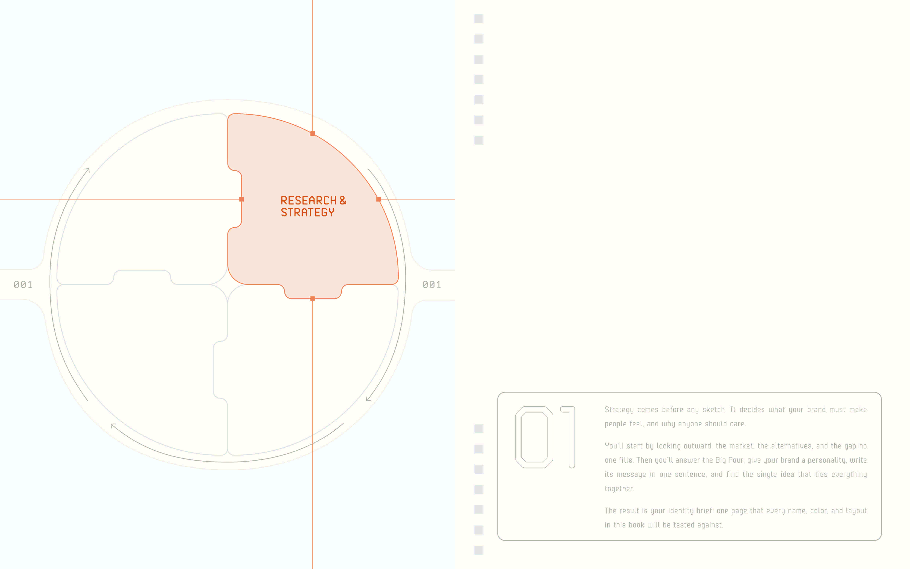
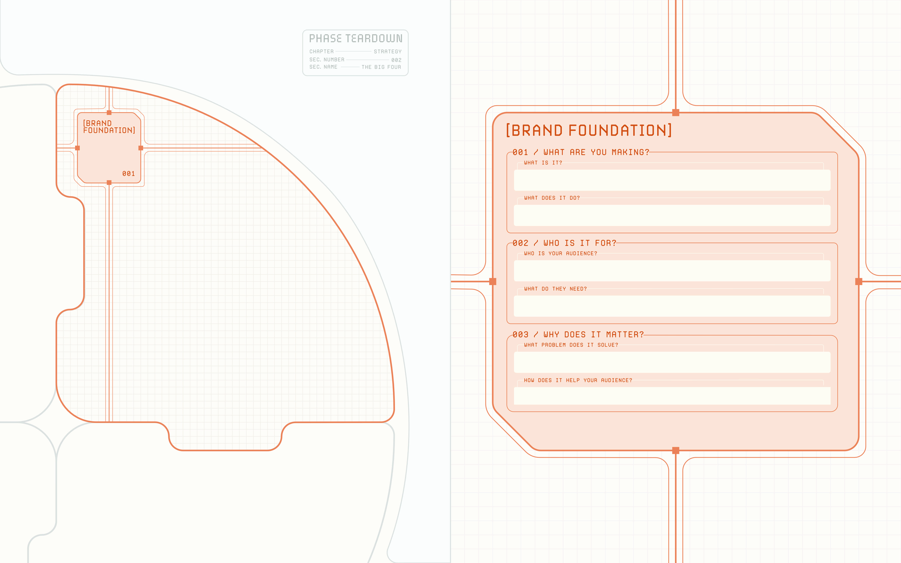
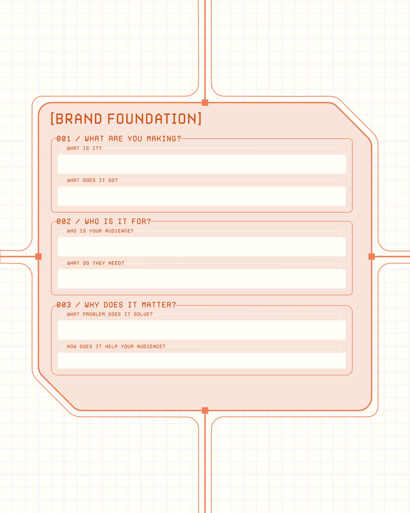
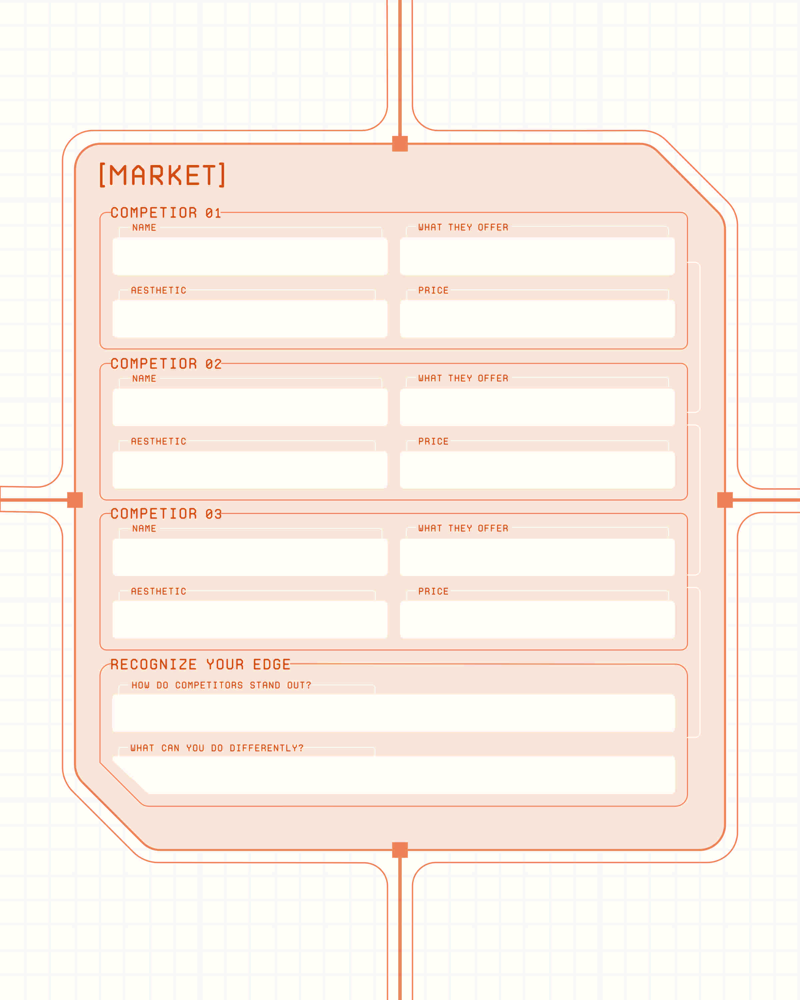
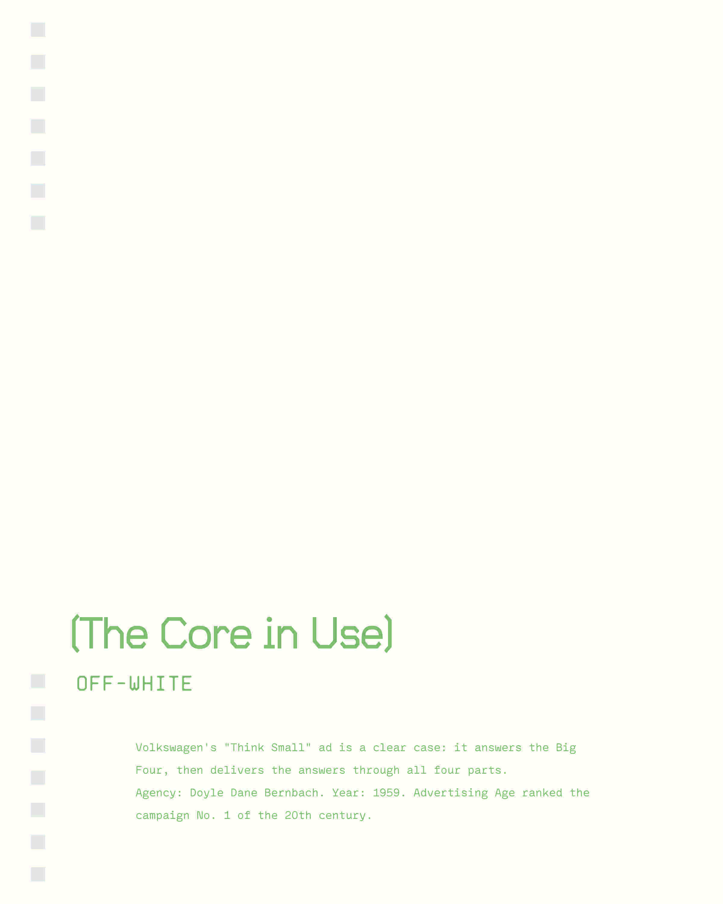
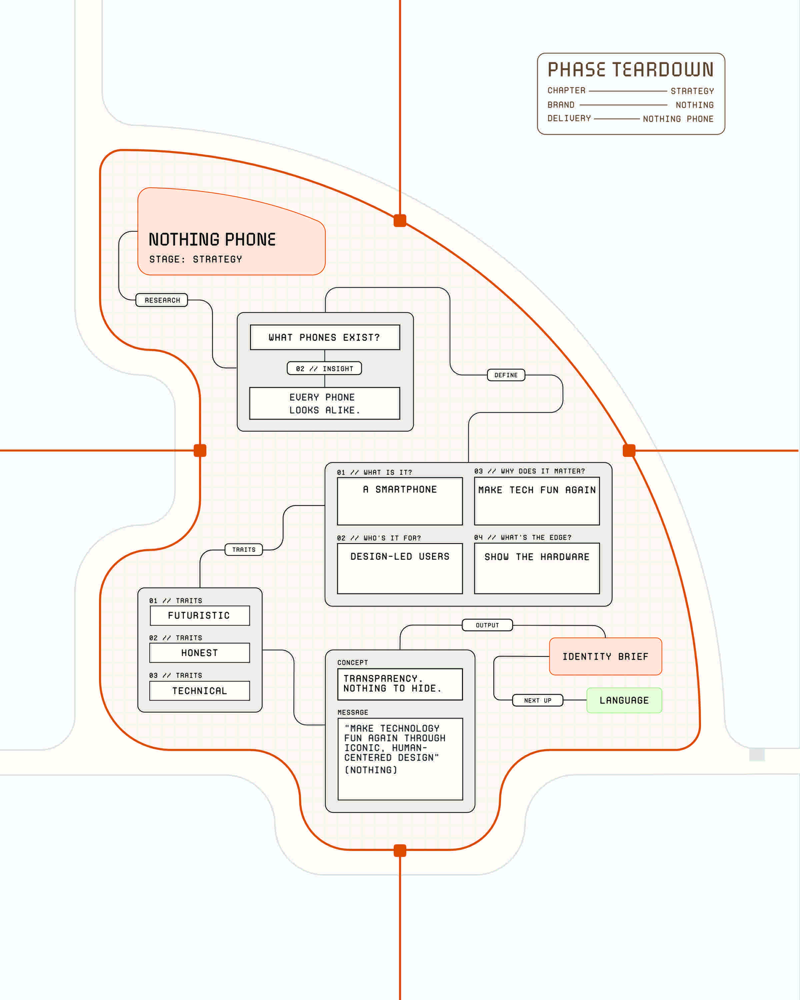
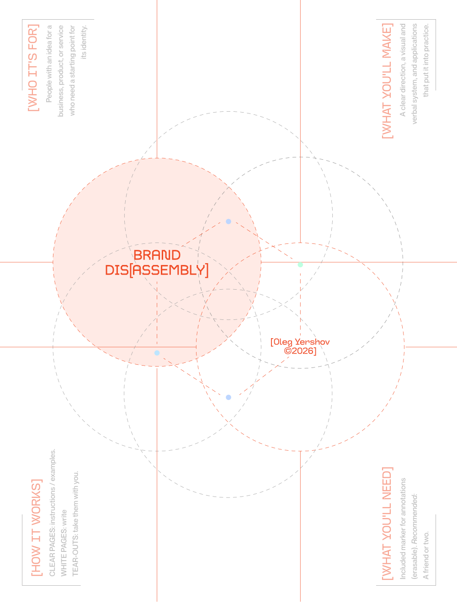
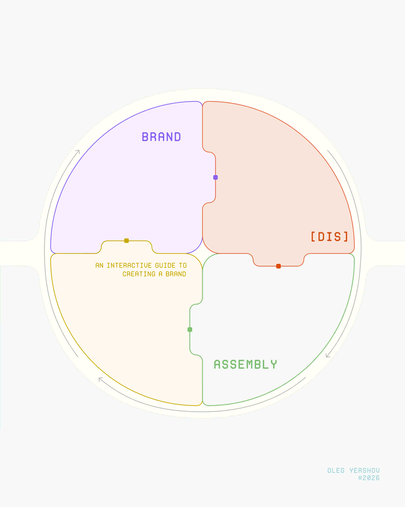

BRAND [DIS]ASSEMBLY
BRAND [DIS]ASSEMBLY is a hands-on guide to building a brand from scratch. I designed the book to make that process visible: transparent pages carry individual elements into larger compositions, while spaces to write invite readers to develop their own ideas. As the book builds itself, the reader builds a brand alongside it.
Building from the Ground Up
I wanted to make the process of building a brand approachable for someone starting with an idea. The guide introduces the decisions behind a brand and encourages readers to consider how those decisions relate to one another. The aim is to help them understand what makes a brand work and give them a way to begin their own.
The book develops progressively, so each new idea has something to build on. That sequence connects the learning experience to the design: readers encounter individual parts first, then see how those parts contribute to a more complete identity.


A Soft Industrial Language
The visual direction pairs a soft sensibility with the structure of an industrial guide. I wanted the book to feel precise enough to explain a system and approachable enough for a reader to write in, question, and return to. That balance shapes the experience of working through it.
The industrial influence reflects the act of assembling a brand from individual components. The softer treatment keeps the process open to exploration. Together, they give the book a consistent character while leaving room for the reader to develop a brand with a character of its own.


A System Revealed in Layers
Transparent pages make the construction of the book part of the explanation. An element can be viewed on its own, then carried into a larger composition as the page turns. Its relationship to the surrounding elements changes, making the connection between an individual part and a complete system tangible.
I use this physical interaction to let the book build itself as it goes. The reader does more than look at a finished layout: they take part in assembling it. Each turn reveals how a small decision can contribute to something larger, echoing the process of developing a brand.


Learning by Building
Fields throughout the book invite readers to apply what they have just learned to their own brand. Writing becomes part of the reading process, giving each idea a place to be explored rather than leaving it as an abstract principle.
As readers progress, their responses accumulate alongside the examples and explanations. The guide becomes a working record of their thinking: something they can revisit, revise, and use to connect earlier decisions with new ones. My aim is for readers to leave with both a clearer understanding of branding and a starting point they have made themselves.

